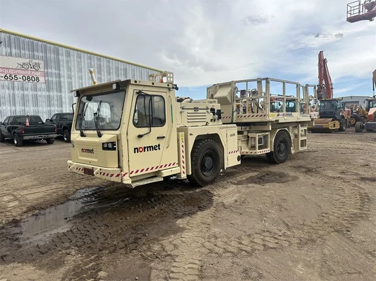
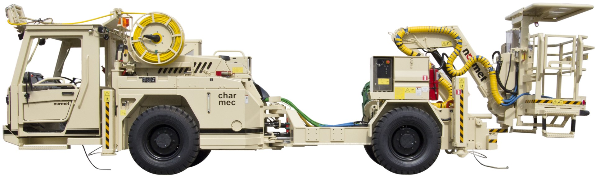
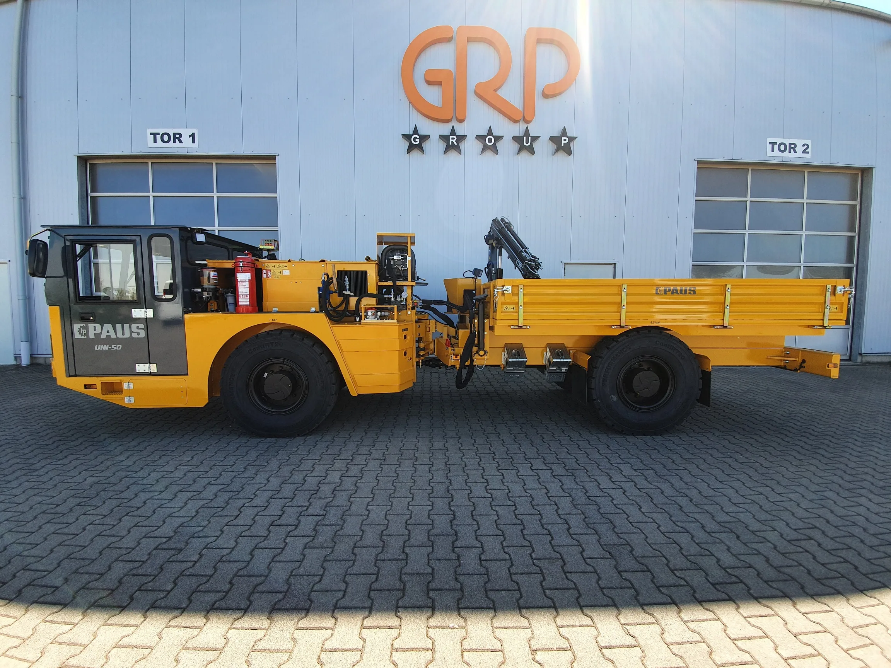
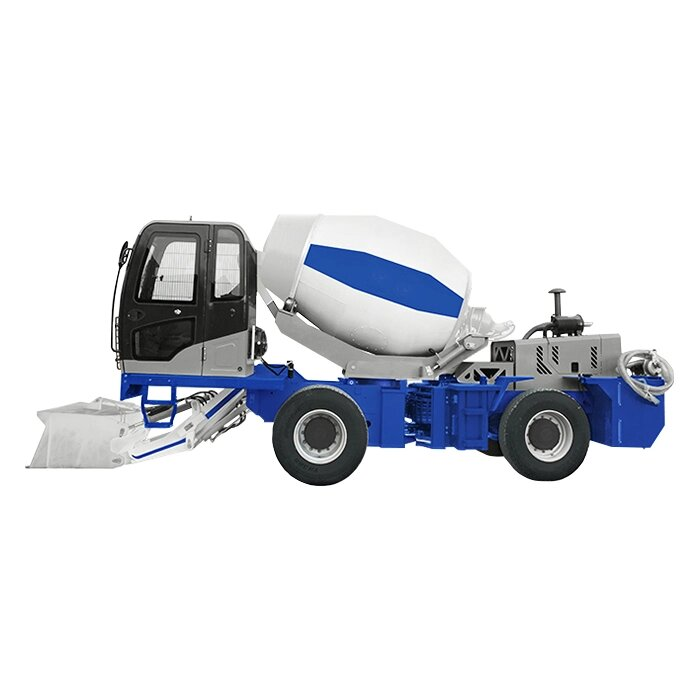
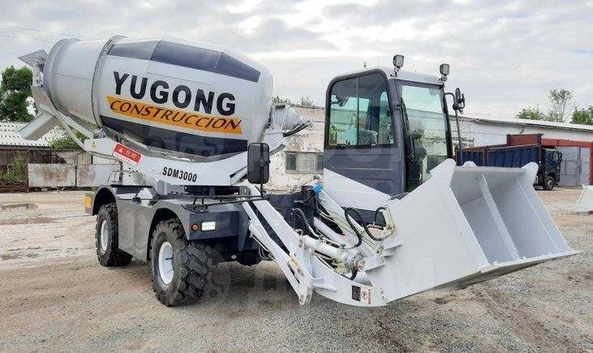
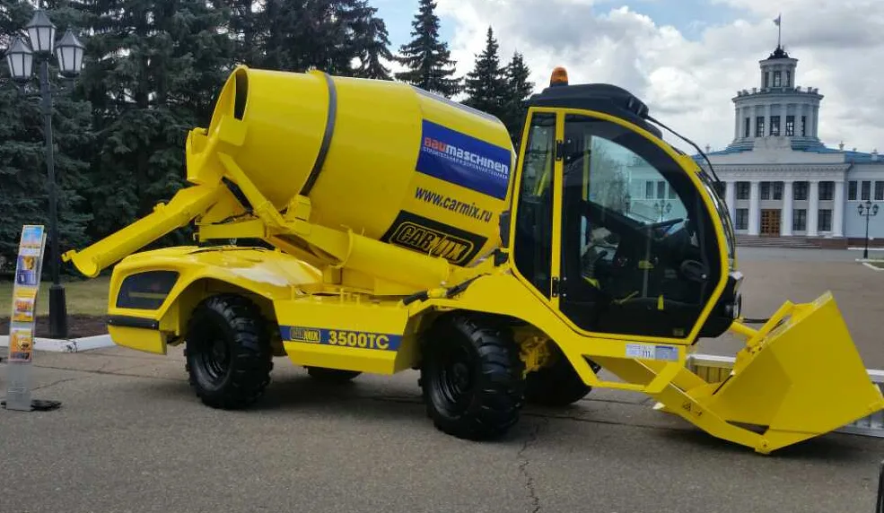
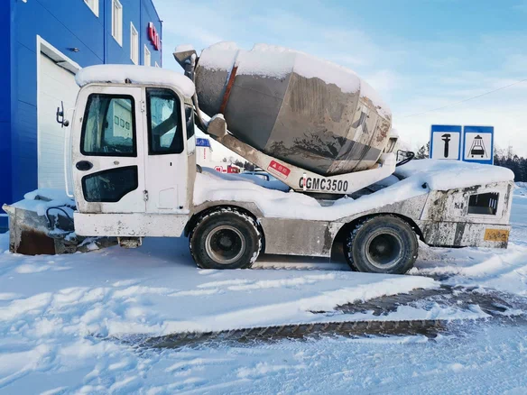

Практический инструмент для таможенных специалистов, декларантов и экспертов. Помогает правильно идентифицировать подвижные машины (группа 84) и транспортные средства (группа 87) при таможенном декларировании.
Самоходная спецтехника одновременно имеет признаки обеих групп. Ошибочная классификация влечёт доначисление таможенных платежей (разница ставок — до 15%) и административную ответственность по ч. 2 ст. 16.2 КоАП РФ.
Сравнительная характеристика ключевых признаков, разграничивающих группы 84 и 87 ТН ВЭД ЕАЭС.
| Признак | Группа 84 Подвижные машины |
Группа 87 Транспортные средства |
Ключевой критерий |
|---|---|---|---|
| 1Основная функция | Технологические операции: копание, дробление, смешивание, подъём грузов, бурение, зарядка ВВ | Перевозка грузов или людей по дорогам общего пользования | Если перевозка вспомогательная, а основная — производственная → группа 84 (ОПИ 3б) |
| 2Регуляторный документ | ТР ТС 010/2011 «О безопасности машин и оборудования» | ТР ТС 018/2011 «О безопасности колёсных транспортных средств» | Сертификат ТР ТС 010 = признак гр. 84; ОТТС по ТР ТС 018 = признак гр. 87 |
| 3Скорость передвижения | До 30–40 км/ч; передвижение — технологическая необходимость | Более 40–50 км/ч; транспортный режим — основной режим эксплуатации | Косвенный признак, учитывается в совокупности с другими |
| 4Регистрация | Регистрируется в Гостехнадзоре; оформляется ПСМ | Регистрируется в ГИБДД (МВД); оформляется ПТС | ПСМ → гр. 84; ПТС → гр. 87. Определяющий административный критерий |
| 5Конструкция шасси | Специализированное нестандартное шасси, неотъемлемо связанное с рабочим органом | Унифицированное дорожное шасси (MAN, Scania, КАМАЗ); соответствует ГОСТ 22827-85 | Стандартное дорожное шасси + надстройка = признак гр. 87 (дела AIMIX, YUGONG) |
| 6Кузов / платформа | Отсутствует стандартный грузовой кузов; рабочий орган конструктивно неотделим | Наличие кузова, платформы или иного стандартного грузового пространства | Съёмная надстройка на стандартном шасси → признак гр. 87 (код 8705) |
| 7Примечание ТН ВЭД | Примечание 2 к разделу XVI: машина с несколькими функциями → основная функция | Примечание 3б ТН ВЭД: ТС со спецоборудованием → код 8705 | При конкуренции разделов XVI и XVII приоритет определяется ОПИ 1, 3а, 3б |
| 8Типовые товары | Экскаваторы (8429), горные машины (8430), бетоносмесители стационарные (8474), погрузчики (8427) | Автокраны (8705), автобетоносмесители (8705), самосвалы (8704), автобусы (8702) | Автобетоносмеситель на дорожном шасси = 8705; бетонный завод на спецшасси = 8474 |
| 9Ставка пошлины | 0% (большинство позиций: 8429, 8430, 8474, 8427) | 15% (8705, 8704); 5–25% (прочие позиции 87) | Разница ставок — экономический мотив неверной классификации |
| 10Документы | Сертификат ТР ТС 010/2011, ПСМ, техописание производителя, акт экспертизы | ОТТС, ПТС, сертификат ТР ТС 018/2011, свидетельство о безопасности конструкции | Противоречие между документами — основание для таможенной экспертизы (ст. 389 ТК ЕАЭС) |
| 11ОТТС | Не предусмотрено. Применяется сертификат или декларация по ТР ТС 010/2011 | Обязательно по ТР ТС 018/2011. Выдаётся органом по сертификации | Наличие ОТТС — безусловный признак гр. 87; отсутствие ОТТС + сертификат ТР ТС 010 — признак гр. 84 |
| 12VIN-номерГОСТ 34485-2018 | Как правило отсутствует. Машины до 25 км/ч освобождены от VIN | Обязателен для всех колёсных ТС по ТР ТС 018/2011 и ГОСТ 34485-2018 | Наличие VIN = признак гр. 87 |
| 13ROPS/FOPSISO 3471/3449 | Обязательны для подземной и горнодобывающей техники по ТР ТС 010/2011 | Не предусмотрены для гр. 87 | Сертифицированная конструкция ROPS/FOPS — признак горной машины гр. 84 |
| 14Применение ОПИ | ОПИ 1, ОПИ 3б. Примечание 2 к разделу XVI | ОПИ 1, ОПИ 3. Примечание 3б ТН ВЭД | При конкуренции: последовательно ОПИ 1 → 3а → 3б → 6 |
Последовательно отвечайте на вопросы — алгоритм определит вероятную группу ТН ВЭД ЕАЭС.
Ключевые нормативно-правовые акты, регулирующие классификацию и декларирование товаров групп 84 и 87 ТН ВЭД ЕАЭС.
| НПА | Реквизиты | Что регулирует | Применение в спорах 84/87 |
|---|---|---|---|
| ТК ЕАЭС | Договор о ЕАЭС от 29.05.2014 (ред. 11.04.2017) | Общие правила классификации и декларирования товаров | Ст. 20 — обязанность правильной классификации; ст. 84–90 — таможенный контроль |
| ТН ВЭД ЕАЭС + ОПИ | Решение Совета ЕЭК от 14.09.2021 № 80 | Товарная номенклатура и основные правила интерпретации (ОПИ 1–6) | ОПИ 1 — текст позиции; ОПИ 3б — основная функция при многоцелевом назначении |
| ТР ТС 010/2011 | Решение КТС от 18.10.2011 № 823 | Безопасность машин и оборудования (группа 84) | Сертификат по данному ТР = признак гр. 84. Ключевой аргумент в деле Normet (2020) |
| ТР ТС 018/2011 | Решение КТС от 09.12.2011 № 877 | Безопасность колёсных транспортных средств (группа 87) | ОТТС по данному ТР = признак гр. 87. Ключевой аргумент в делах AIMIX (2023) и YUGONG (2023) |
| ТР ТС 031/2012 | Решение Совета ЕЭК от 18.10.2012 № 89 | Безопасность сельскохозяйственных тракторов | Разграничивает сельскохозяйственные машины гр. 84 от тягачей гр. 87 (8701) |
| КоАП РФ, ч. 2 ст. 16.2 | ФЗ от 30.12.2001 № 195-ФЗ | Ответственность за недостоверное декларирование кода ТН ВЭД | Штраф 50–200% таможенной стоимости. YUGONG — штраф +80%; PAUS — 2 899 749 руб. |
| Пояснения к ТН ВЭД ЕАЭС | Рекомендация Коллегии ЕЭК от 07.11.2017 № 21 | Официальное толкование товарных позиций гр. 84 и 87 | Ключевой документ для споров 8430 vs 8705. Суды опираются на текст пояснений |
| Решение Коллегии ЕЭК № 33 | 08.04.2025, вступило в силу 11.05.2025 | Классификация самоходной подземной горно-шахтной машины для транспортировки ВВ | Прецедент: машина для перевозки ВВ в подземных выработках = 8704 22 920 9, а не 8430 50 000 3 |
| Решение ЕЭК № 105 | 29.08.2017 | Классификация бетоносмесительной машины с самозагрузкой | Прецедент: CARMIX = 8474 31 000 9 (гр. 84). Применён в деле № А53-13593/2023 |
Ключевые судебные дела по спорам о классификации товаров групп 84 и 87 ТН ВЭД ЕАЭС.







| Код ТН ВЭД | Наименование | Группа | Пошлина | НДС | Итого нагрузка | Типичные примеры |
|---|---|---|---|---|---|---|
| 8426 49 009 9 | Кран самоходный, прочий | 84 | 5% | 22% | 28,1% | Самоходные краны на специальном шасси |
| 8429 20 009 9 | Грейдеры самоходные, прочие | 84 | 3% | 22% | 25,66% | Автогрейдеры тяжёлые и лёгкие |
| 8429 51 990 0 | Экскаваторы с поворотной надстройкой 360° | 84 | 0% | 22% | 22,0% | Komatsu, Hitachi, Hyundai, Liebherr |
| 8427 20 900 0 | Погрузчики самоходные, прочие | 84 | 0% | 22% | 22,0% | Фронтальные и вилочные погрузчики |
| 8430 50 000 3 | Машины для проходки тоннелей и горных выработок | 84 | 0% | 22% | 22,0% | Normet Utilift MF 530, Himec MF 604, Charmec |
| 8474 31 000 9 | Машины для смешивания бетона, прочие | 84 | 0% | 22% | 22,0% | CARMIX 3500 (гр. 84 отстояна); YUGONG (переклассифицирован) |
| 8704 22 920 9 | Самосвалы для внедорожного применения, прочие | 87 | 15% | 22% | 40,3% | PAUS UNI 50-3 LP (переклассифицирован из 8430) |
| 8705 40 000 1 | Автобетоносмесители | 87 | 15% | 22% | 40,3% | AIMIX AS-3.5; YUGONG SDM4000; автобетоносмесители КАМАЗ, MAN |
| 8705 90 800 5 | Транспортные средства спецназначения, прочие | 87 | 15% | 22% | 40,3% | Normet Utilift (оспорено таможней, суд вернул в 8430) |
| 8701 20 900 2 | Тракторы седельные | 87 | 5–15% | 22% | 27–40% | Седельные тягачи для дорожного применения |